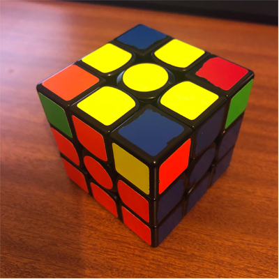
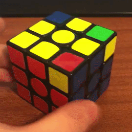
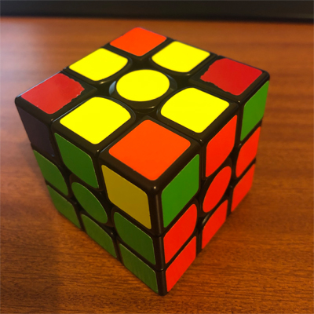

the last layer
step 4
the fourth step is to begin solving a cross on the yellow side (or up face). here, we will orient all of the yellow edges, or in other words,
get yellow facing up on each of the edge pieces. remember, the corners do not matter in this step.
there are 4 possible cases you can get, but you only need 1 algorithm to be able to do all them.
here is the algorithm:
F R U R' U' F'.

this is very similar to the first algorithm you learned, but, you add an F move at the start, and an F' move at the end
here are the 4 possible cases:
this here is a line case. hold the cube as shown in the picture (with the line going across horizontally), then hold the cube with white facing down, and perform
the algorithm.

this is the L case. hold the cube as shown in the picture (with the L shape at the back+left of the cube), then hold the cube with white facing down, and perform
the algorithm. you will end up with the line case.

this here is a dot case. doesnt matter how you hold the cube, as long as white is facing down. perform the algorithm. you will end up with the L case

the 4th case you get is the solved case, which mean you can move on. this is what it looks like:

once you have done this, you may move onto the next step!
step 5
the fifth step is a continuation from step 4. in step 4 we oriented all of the yellow edges, now we will position them correctly, so that edge edge lines up with
its' correct centre.
the first part of this step is to find 2 edges that line correctly, it will like similar to this:

turn the top layer until you get this. if you don't get it after 4 rotations, thats ok too, it just means this step will take a little longer.
hold the 2 solved edges at the back and right, and white on the bottom, as shown, and perform the following algorithm:
R U R' U R U2 R'.you may need to adjust the top layer after this to get the edges to line up

this may take a little practice to get right, but follow the video above and you will pick it up in no time!
one you have done this algorithm, check if you get all 4 yellow edges solved. if you do not, simply redo this step.
if you had the other 2 edges solved, where they are opposite each other instead of next to each other, like this:

just perform the algorithm anyway, and you will end up with 2 edges correct. you can then start this step again and you should have a completed yellow cross!.

step 6
the sixth step is now positioning the corners in the last layer. we have solved the edges, just the corners left.
check each corner to see if it is in the right position. you will know its right if the colours on the piece match up with the 3 colours around it.
it will look like this:

you can either have 0 correctly positioned corners, 1, or 4. if its 4 you can skip this step.
if you have 1 corner in the right spot, hold the cube so that it is on the front/right, and with white on the bottom, like this:
perform the following algorithm:
U R U' L' U R' U' L. this may take a while to learn, but youll get there! i believe in you.

you may need to repeat this a number of times before each corner is correctly positioned.
if you had 0 corners in the correct spot, like this:
simply perform the algorithm anyway, and continue from there.
once you have all corners in the right spot, like this, you can move on. you are so close now!

step 7
the seventh and final step will flip the last corners and solve the cube.
we have had white on the bottom for most of the solve, but here we flip it, so yellow is now on the bottom, like this:
all you need is one algorithm, the one you learnt during step 2 (R U R' U'), but you have to be careful... if you get this wrong, you will need to start again
from scratch!!
hold the cube so that an unsolved corner is on the bottom right, here:
peform the algorithm until it is correctly placed, but ignore the other layers. you only care about that one piece.

once it is in the right spot, turn ONLY the down (D) layer until another unsolved piece is in that spot. then repeat that earlier step.

remember, you have to turn ONLY the bottom layer. if you rotate the whole cube instead, this will not work.
once the remaining pieces have been correctly solved, you should have a completely solved rubik's cube. if you did this right, then congratulations, you earned it!!